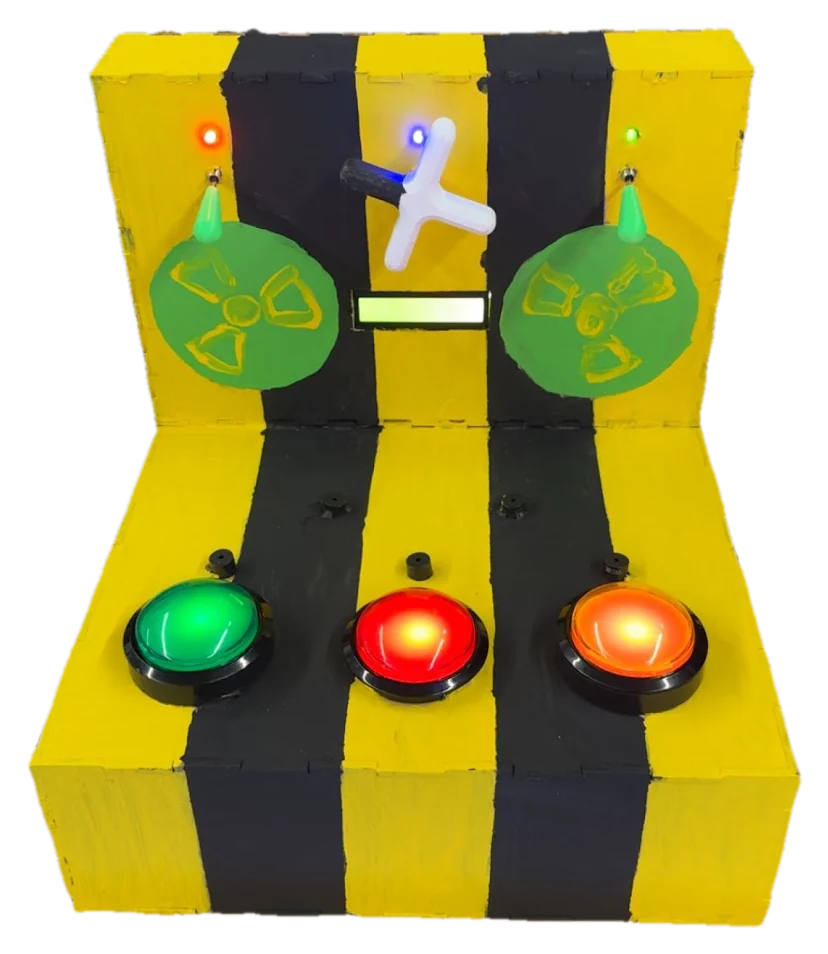
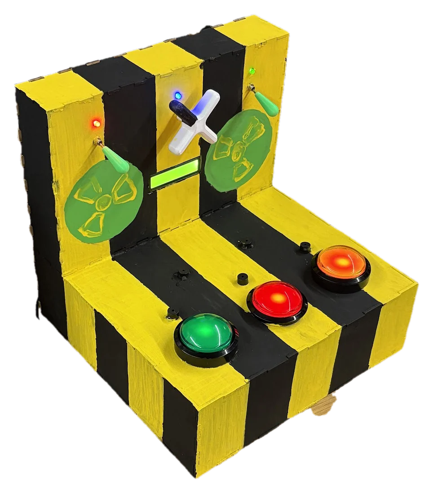

Reaction-Time Game
A Chernobyl-themed carnival game where you hit each input as it lights up, faster and faster, until the reactor melts down. I wrote the game logic in Python. Using stats from 30+ user trials, I tuned the speed so an average game ran under 2 minutes and calculated prize cutoffs so the game would turn a profit. I also designed and painted the outside.
- Role
- Embedded systems developer
- Team
- 4 people
- Dates
- Sep–Dec 2025
- Tools
- Raspberry Pi Pico, Python, laser cutter, 3D printer


Summary
“React to the Pressure” was our game for the Fall 2025 Expo, built around engineering failure. It looks like a power-plant control panel. Players try to throttle a failing reactor by shutting off blinking lights in time. I built the game logic in Python, with <1 ms timing precision and about 98% input accuracy. Across 30+ user trials, I also fixed 5 hardware-software integration bugs.
Problem
The game had to fit the expo’s engineering-failure theme and hold up to players hitting it hard. It also had to be cheap to build, so apart from the laser-cut wood, nearly all the materials came from the FYELIC and EXP labs. And as a carnival game it had to make money, which meant setting the prize cutoffs high enough that the game stayed profitable.
Design
The panel has six inputs. Three are arcade buttons, two are switches, and one is a 3D-printed valve, and each has an LED above it that lights when it’s time to hit it. Buzzers add sound. Everything is wired through a breadboard to a Raspberry Pi Pico, a small microcontroller board, which runs a Python script. The script reads the inputs and keeps score, and it lights the LEDs on a schedule that speeds up as the game goes on. It catches presses with pin interrupts, which react the moment an input changes, so no press gets missed while the game loop is busy with something else.
The code had two layers. A teammate wrote the low-level functions that turn each part on and off and read its input. I wrote the game on top of those functions. My code decides when each new LED lights up, handles the inputs and timing, and checks whether you’ve won or lost. I also designed the outside, with the black-and-yellow hazard stripes that give it its “nuclear” look.
Build
- Laser-cut wood shell, glued together for the final version.
- Large LED buttons, switches, buzzers, and a 3D-printed valve and lever handles.
- I put the first prototype together with electrical tape, and I painted the final version.
- The final wiring was soldered so the connections would hold up to rough play.
Testing and iteration
Tuning the game with real players. Most of my time went here. We ran 30+ user trials with classmates and teammates, and I used the results to set how fast the game speeds up, by shrinking the time between each new button to press or valve to turn. We kept adjusting the speed until the average game lasted under 2 minutes, about how long people spend at each carnival game. I also analyzed the trial stats and used them to calculate the survival times for a small prize and a big prize, so the game would turn a profit.
Along the way we fixed 5 hardware-software integration bugs, testing and refining each build as we went. Here are three of them.
- Valve. I fixed the midpoint threshold on the valve’s potentiometer, the knob sensor that decides when a turn counts.
- Lag. I added edge detection, so the code reacts the instant an input changes, to counteract lag.
- Lever. The lever used to work as an on/off switch. I changed it so each flick counts as one input.
Results
- Timing precision: under 1 ms
- Input accuracy: about 98%
- User trials: 30+
- Integration bugs fixed: 5
How a round works. At first an LED lights every 2 seconds, and the gap shrinks as you play. Wrong inputs shrink it faster. The game ends if you miss a lit input within 2 seconds, or if all 6 inputs are lit at once. Last under 110 seconds and you win no prize. Last 110 to 160 seconds and you get a small prize, and past 160 seconds you get a big one.
What I’d change
I’d run more playtests. With a bigger sample we could pin down the average survival time and place the prize cutoffs, which were set at 110 and 160 seconds, more accurately.